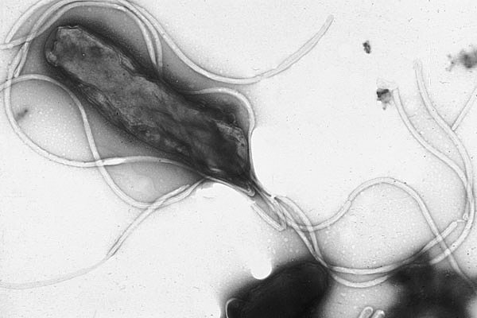

Nadar a bajo Reynolds: bacterias, espermatozoides y mucus
Imaginá nadar en una pileta de melaza, sin poder moverte a más de un centímetro por minuto. Así, según el físico Edward Purcell, sería ponerse en el lugar de una bacteria. A esa escala, la inercia no existe y los trucos de una brazada no sirven. Moverse exige una estrategia completamente distinta.
El número de Reynolds de una persona que nada ronda 10⁴, y el de un microorganismo, entre 10⁻⁴ y 10⁻⁵ [1]. Una bacteria de 1 micrómetro que nada a 30 micrómetros por segundo en agua da Re ≈ 3 × 10⁻⁵ (un cálculo propio). La fuerza viscosa es muchos órdenes de magnitud más fuerte que la inercial [2]. Purcell lo ilustró con una cuenta: si una bacteria deja de impulsarse, se detiene en alrededor de un microsegundo, habiendo recorrido menos que el tamaño de un átomo [1].
Ese régimen tiene propiedades raras: los flujos son instantáneos y reversibles en el tiempo [2]. No hay deslizamiento. No hay estela. Si el movimiento se detiene, todo se detiene.
De ahí sale una consecuencia famosa. Pensá en un vieira, una almeja que nada abriendo y cerrando sus valvas. A número de Reynolds alto, puede cerrarse rápido y abrirse lento, y avanzar. A número de Reynolds bajo, no: como el flujo no depende de la velocidad, la ida y la vuelta se cancelan exactamente, sin importar con qué rapidez se hagan. Es el teorema del vieira de Purcell: un nadador a bajo número de Reynolds que repite una deformación recíproca, igual hacia adelante que hacia atrás, no avanza nada [1][2].
La película al revés: en la melaza, si filmás a alguien moviendo una mano y pasás la película al revés, se ve igual de natural. Lo que hiciste de ida se deshace de vuelta. Para avanzar, necesitás un movimiento que al revés se vea distinto.
Los microorganismos rompen esa simetría temporal con hélices que rotan y con cilios que hacen batidas flexibles, tipo remo [2]. Un flagelo de bacteria gira como un sacacorchos: el giro continuo no se deshace, a diferencia de un vaivén (un comentario propio). Los espermatozoides propagan una onda a lo largo de su flagelo, y esa onda tiene un sentido: tampoco se ve igual al revés (un comentario propio).

Los cilios hacen algo parecido, con batidas flexibles parecidas a las de un remo [2]. En las vías aéreas, los cilios barren el moco y la suciedad hacia afuera [3], como cuenta Respirar.
Un teorema con condiciones: el resultado vale para fluidos newtonianos. Muchos fluidos biológicos no lo son [2]. En 2014, T. Qiu y sus colegas construyeron un micronadador con una sola bisagra, una especie de almeja, que sí avanzó en un fluido no newtoniano, modulando la viscosidad al cambiar la velocidad de corte [2]. Esto sirve para diseñar microrrobots para el cuerpo, y es un recordatorio de que un teorema dice lo que sus hipótesis dicen.
A escala de bacteria, la viscosidad domina y la inercia desaparece. Por eso, un movimiento de ida y vuelta no sirve para avanzar: la ida se deshace con la vuelta. Los microorganismos lo resuelven con hélices que giran y con ondas o remos flexibles, movimientos que no son iguales al revés. Lo que para nosotros es agua, para ellos es melaza.
Pregunta para la comunidad: ¿Qué número de Reynolds tendría una persona nadando en melaza? ¿Podría ser que con cierto tamaño de nadador y cierta viscosidad ya no se pueda avanzar haciendo el crol?